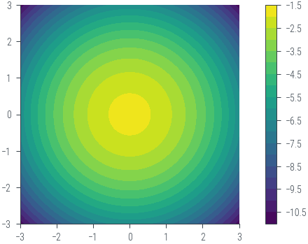
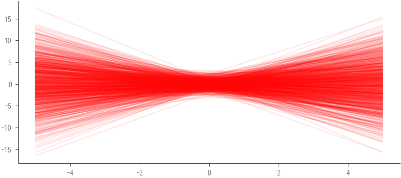
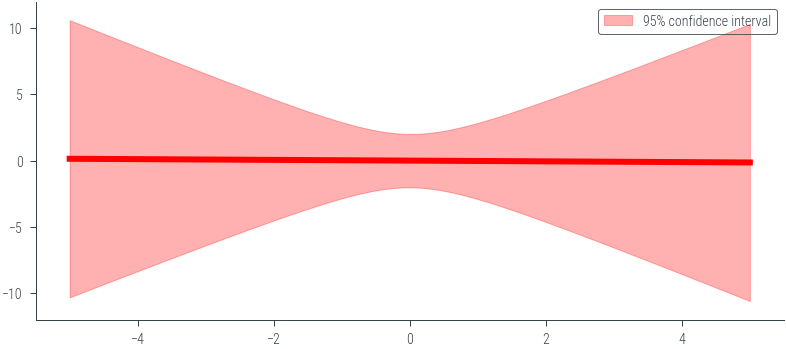
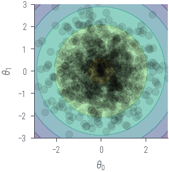
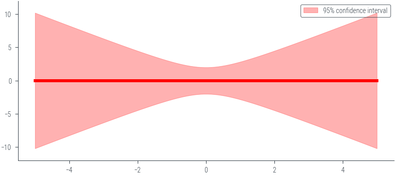
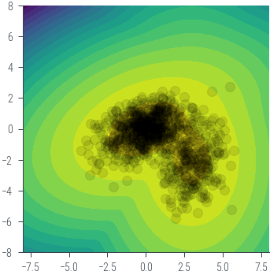
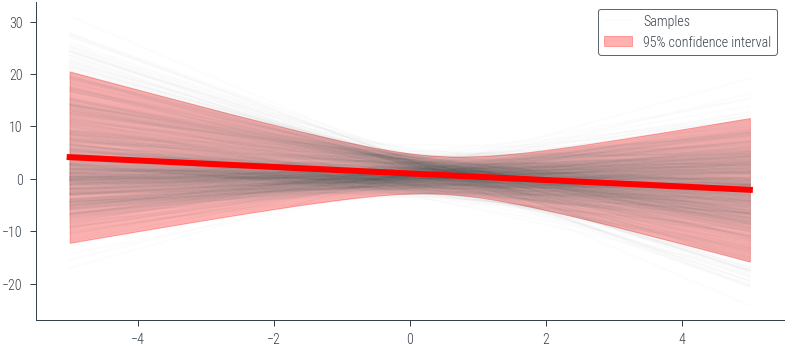

import torch
import numpy as np
import matplotlib.pyplot as plt
import pandas as pd
%matplotlib inline
# Retina display
%config InlineBackend.figure_format = 'retina'Closed form solution for prior predictive distribution
from tueplots import bundles
plt.rcParams.update(bundles.beamer_moml())
# Also add despine to the bundle using rcParams
plt.rcParams['axes.spines.right'] = False
plt.rcParams['axes.spines.top'] = False
# Increase font size to match Beamer template
plt.rcParams['font.size'] = 16
# Make background transparent
plt.rcParams['figure.facecolor'] = 'none'prior_mu = torch.zeros(2)
prior_cov = torch.eye(2)
theta = torch.distributions.MultivariateNormal(prior_mu, prior_cov)
thetaMultivariateNormal(loc: torch.Size([2]), covariance_matrix: torch.Size([2, 2]))theta.loc, theta.covariance_matrix(tensor([0., 0.]),
tensor([[1., 0.],
[0., 1.]]))# Plot the prior in 2d contour
theta1 = torch.linspace(-3, 3, 100)
theta2 = torch.linspace(-3, 3, 100)
theta1, theta2 = torch.meshgrid(theta1, theta2)
theta_values = torch.stack((theta1, theta2), dim=-1) # Shape: (100, 100, 2)
z = theta.log_prob(theta_values.view(-1, 2)) # Shape: (10000,)
z = z.view(100, 100) # Reshape to (100, 100)
plt.contourf(theta1.numpy(), theta2.numpy(), z.numpy(), 20)
plt.gca().set_aspect('equal')
plt.colorbar()<matplotlib.colorbar.Colorbar at 0x7f40b71c0820>
theta_sample = theta.sample((1000,))
theta_sampletensor([[-1.8783, 0.7921],
[ 0.7293, 0.1063],
[ 0.6363, -1.0957],
...,
[-1.4223, 0.2716],
[ 1.2850, 1.7269],
[-0.0650, 0.0788]])x_lin = torch.linspace(-5, 5, 100)
y_lin = theta_sample[:, 0].unsqueeze(1) + theta_sample[:, 1].unsqueeze(1) * x_lin.unsqueeze(0)_ = plt.plot(x_lin.numpy(), y_lin.numpy().T, alpha=0.1, color='red')
# Mean prediction
y_pred_mean = y_lin.mean(dim=0)
plt.plot(x_lin.numpy(), y_pred_mean.numpy(), color='red', linewidth=3)
# 95% confidence interval
y_pred_std = y_lin.std(dim=0)
plt.fill_between(x_lin.numpy(), (y_pred_mean - 2 * y_pred_std).numpy(), (y_pred_mean + 2 * y_pred_std).numpy(), alpha=0.3, color='red', label='95% confidence interval')
plt.ylim(-12, 12)
plt.legend()<matplotlib.legend.Legend at 0x7f40b67496a0>
# Plot the theta samples on the contour plot as scatter points
plt.contourf(theta1.numpy(), theta2.numpy(), z.numpy(), 4, alpha=0.5)
plt.gca().set_aspect('equal')
plt.xlabel(r'$\theta_0$')
plt.ylabel(r'$\theta_1$')
plt.xlim(-3, 3)
plt.ylim(-3, 3)
plt.scatter(theta_sample[:, 0].numpy(), theta_sample[:, 1].numpy(), alpha=0.1, color='black')
plt.tight_layout()/tmp/ipykernel_57304/1762244273.py:11: UserWarning: This figure was using constrained_layout, but that is incompatible with subplots_adjust and/or tight_layout; disabling constrained_layout.
plt.tight_layout()

### Noiseless caseimport torch
import numpy as np
import matplotlib.pyplot as plt
# Define the prior parameters
m0 = torch.tensor([0.0, 0.0]) # Mean of the prior
S0 = torch.tensor([[1.0, 0.0], [0.0, 1.0]]) # Covariance matrix of the prior
sigma = 0.0 # Noise parameter
# Define the basis function (phi)
def phi(x):
return torch.tensor([1.0, x])
# Function to calculate the prior predictive distribution
def prior_predictive(x_star, m0, S0, sigma):
phi_x_star = torch.stack([phi(x) for x in x_star])
predictive_mean = phi_x_star @ m0
predictive_cov = torch.diagonal(phi_x_star @ S0 @ phi_x_star.t(), offset=0) + sigma**2
return predictive_mean, predictive_cov
# Generate x values for prediction
x_star = torch.linspace(-5, 5, 100)
# Calculate the prior predictive distribution
predictive_mean, predictive_cov = prior_predictive(x_star, m0, S0, sigma)
# Plot mean +- 2 std
plt.plot(x_star.numpy(), predictive_mean.numpy(), color='red', linewidth=3)
plt.fill_between(x_star.numpy(), (predictive_mean - 2 * torch.sqrt(predictive_cov)).numpy(), (predictive_mean + 2 * torch.sqrt(predictive_cov)).numpy(), alpha=0.3, color='red', label='95% confidence interval')
plt.legend()
plt.ylim(-12, 12)(-12.0, 12.0)
y_pred_stdtensor([5.2264, 5.1248, 5.0232, 4.9218, 4.8205, 4.7192, 4.6181, 4.5170, 4.4161,
4.3153, 4.2147, 4.1142, 4.0138, 3.9136, 3.8136, 3.7138, 3.6142, 3.5149,
3.4157, 3.3169, 3.2184, 3.1202, 3.0223, 2.9249, 2.8278, 2.7313, 2.6353,
2.5399, 2.4452, 2.3512, 2.2580, 2.1658, 2.0747, 1.9848, 1.8963, 1.8094,
1.7243, 1.6414, 1.5609, 1.4833, 1.4091, 1.3388, 1.2730, 1.2125, 1.1581,
1.1108, 1.0714, 1.0409, 1.0200, 1.0094, 1.0093, 1.0198, 1.0406, 1.0710,
1.1103, 1.1576, 1.2119, 1.2723, 1.3381, 1.4084, 1.4826, 1.5601, 1.6405,
1.7234, 1.8085, 1.8954, 1.9839, 2.0737, 2.1649, 2.2571, 2.3502, 2.4442,
2.5389, 2.6343, 2.7303, 2.8268, 2.9238, 3.0213, 3.1191, 3.2173, 3.3159,
3.4147, 3.5138, 3.6132, 3.7128, 3.8126, 3.9126, 4.0128, 4.1131, 4.2136,
4.3143, 4.4151, 4.5160, 4.6170, 4.7182, 4.8194, 4.9207, 5.0222, 5.1237,
5.2253])torch.sqrt(predictive_cov)tensor([5.0990, 5.0000, 4.9011, 4.8022, 4.7035, 4.6048, 4.5063, 4.4079, 4.3095,
4.2114, 4.1133, 4.0154, 3.9177, 3.8201, 3.7227, 3.6255, 3.5285, 3.4318,
3.3353, 3.2390, 3.1431, 3.0475, 2.9523, 2.8575, 2.7631, 2.6692, 2.5758,
2.4830, 2.3909, 2.2995, 2.2090, 2.1194, 2.0309, 1.9437, 1.8578, 1.7735,
1.6910, 1.6107, 1.5328, 1.4577, 1.3859, 1.3180, 1.2546, 1.1963, 1.1440,
1.0985, 1.0607, 1.0314, 1.0114, 1.0013, 1.0013, 1.0114, 1.0314, 1.0607,
1.0985, 1.1440, 1.1963, 1.2546, 1.3180, 1.3859, 1.4577, 1.5328, 1.6107,
1.6910, 1.7735, 1.8578, 1.9437, 2.0309, 2.1194, 2.2090, 2.2995, 2.3909,
2.4830, 2.5758, 2.6692, 2.7631, 2.8575, 2.9523, 3.0475, 3.1431, 3.2390,
3.3353, 3.4318, 3.5285, 3.6255, 3.7227, 3.8201, 3.9177, 4.0154, 4.1133,
4.2114, 4.3095, 4.4079, 4.5063, 4.6048, 4.7035, 4.8022, 4.9011, 5.0000,
5.0990])Computing the evidence term
\[ I = \int p(\mathcal{D} \mid \theta) p(\theta) \mathrm{d}\theta \]
\[ I \approx \frac{1}{N} \sum_{i=1}^N p(\mathcal{D} \mid \theta_i) \]
where \(\theta_i \sim p(\theta)\)
thetaMultivariateNormal(loc: torch.Size([2]), covariance_matrix: torch.Size([2, 2]))theta.sample((10,))tensor([[-0.7712, 1.9991],
[-0.6919, -0.3068],
[ 1.2983, 1.2461],
[-2.2901, 0.7368],
[-0.8971, -0.3141],
[ 0.0589, 0.6512],
[ 0.0549, 1.1111],
[-0.7357, 0.3042],
[-1.0303, 1.4628],
[-0.8665, 0.4207]])def forward(x, theta):
return theta[:, 0].unsqueeze(1) + theta[:, 1].unsqueeze(1) * x.unsqueeze(0)
def likelihood(y, x, theta, sigma):
return torch.distributions.Normal(forward(x, theta), sigma).log_prob(y).sum(dim=1)
# Use a different prior distribution: a mixture of two Gaussians
pis = torch.tensor([0.7, 0.3])
norm1 = torch.distributions.MultivariateNormal(torch.tensor([0.0, 0.0]), torch.tensor([[2.0, 0.5], [0.5, 1.0]]))
norm2 = torch.distributions.MultivariateNormal(torch.tensor([3.0, -2.0]), torch.tensor([[1.0, 0.0], [0.0, 2.0]]))
mog = torch.distributions.MixtureSameFamily(torch.distributions.Categorical(pis),
torch.distributions.MultivariateNormal(torch.stack((norm1.loc, norm2.loc)),
torch.stack((norm1.covariance_matrix, norm2.covariance_matrix))))
theta = mog.sample((1000,))
# Plot the samples
# Plot the prior in 2d contour
theta1 = torch.linspace(-8, 8, 100)
theta2 = torch.linspace(-8, 8, 100)
theta1, theta2 = torch.meshgrid(theta1, theta2)
theta_values = torch.stack((theta1, theta2), dim=-1) # Shape: (100, 100, 2)
z = mog.log_prob(theta_values.view(-1, 2)) # Shape: (10000,)
z = z.view(100, 100) # Reshape to (100, 100)
plt.contourf(theta1.numpy(), theta2.numpy(), z.numpy(), 20)
plt.gca().set_aspect('equal')
plt.scatter(theta[:, 0].numpy(), theta[:, 1].numpy(), alpha=0.1, color='black')
<matplotlib.collections.PathCollection at 0x7f40c45a2e50>
theta_sample = mog.sample((1000,))
y_lin = theta_sample[:, 0].unsqueeze(1) + theta_sample[:, 1].unsqueeze(1) * x_lin.unsqueeze(0)_ = plt.plot(x_lin.numpy(), y_lin.numpy().T, alpha=0.01, color='black')
# Plot the last sample to see the line and mark the label
_ = plt.plot(x_lin.numpy(), y_lin.numpy()[-1], alpha=0.01, color='black', label='Samples')
# Mean prediction
y_pred_mean = y_lin.mean(dim=0)
plt.plot(x_lin.numpy(), y_pred_mean.numpy(), color='red', linewidth=3)
# 95% confidence interval
y_pred_std = y_lin.std(dim=0)
plt.fill_between(x_lin.numpy(), (y_pred_mean - 2 * y_pred_std).numpy(), (y_pred_mean + 2 * y_pred_std).numpy(), alpha=0.3, color='red', label='95% confidence interval')
plt.legend()<matplotlib.legend.Legend at 0x7f40c4615790>